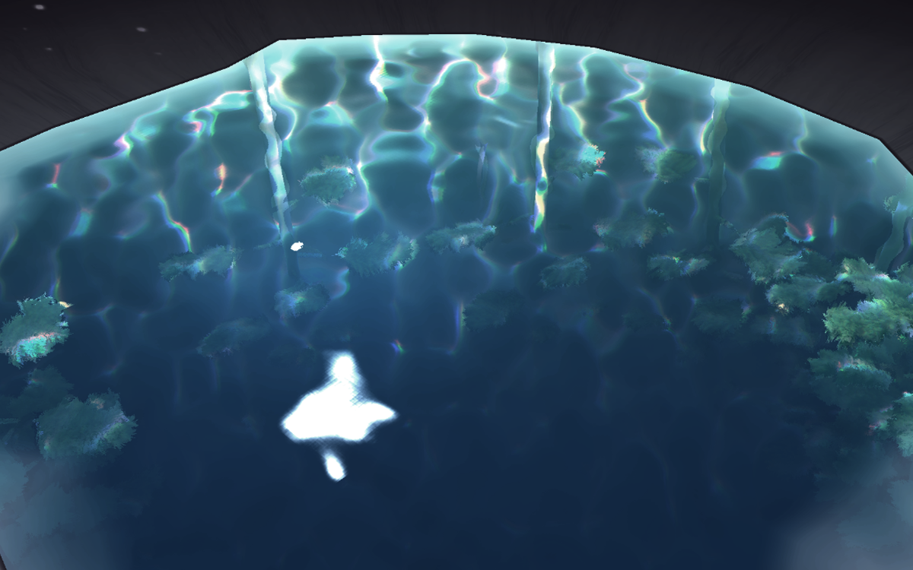
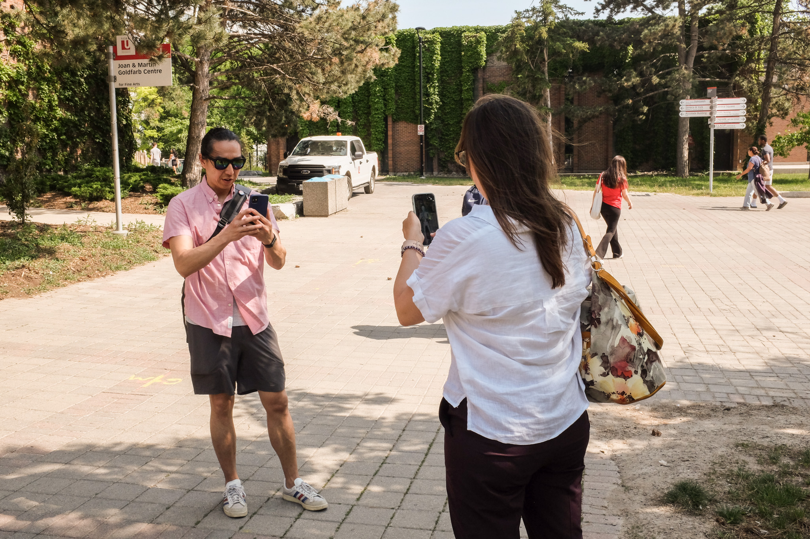

Encounter
“Encounter” is an innovative and immersive project that leverages Augmented Reality (AR) technology to create a unique social experience in public spaces. By blending the virtual and physical worlds, it aims to redefine social presence and foster collective self-organization among participants. A piece commissioned for Congress 2023, the annual and largest meeting of the Federation of Social Sciences and Humanities in Canada, Encounter is prominently staged as the main app-based artistic experience of the meeting.
At its core, Encounter provides participants with a novel way to engage with their surroundings. Through the AR interface, users are guided to virtual bodies of water by wayfinding cues such as arrows and route markers. These bodies of water can take various forms, such as rivers, lakes, or streams, that collectively represent the movement and dynamism within the academic environment

But even before arriving at these water bodies, Encounter offers users a chance to connect with other Congress participants by asking users to locate someone around them that they can go on a walk with. If and when a partner is located, the app leads both users to the same location, inviting them to celebrate chance encounter between them. These moments of connection manifest a junction or starting point between two separate paths and combine them into a common journey towards the gathering. Participants are encouraged to follow virtual pathways leading to predetermined points of interest around the conference venue. By doing so, users embark together on a journey of exploration and discovery, sharing new perspectives and insights about their intersubjective experiences of the landscape.
Gathering around a virtual water body is a key element of the project. These spaces are opportunities for conversation, silence, and/or remembrance. They serve as focal points where participants can come together, exchange ideas, share stories, or simply enjoy a moment of quiet reflection. As the virtual bodies of water reveal deep, imaginary landscapes of underwater forests and fauna, so do they facilitate the emotional landscapes of relationship-building and conversations between users, which enhances a sense of togetherness and facilitates meaningful interactions.
Encounter aims to redefine traditional notions of public space and transform navigation and wayfinding into moments of interactive and immersive experience. By blending the virtual and physical realms, the project offers participants a unique and engaging social experience that encourages exploration, connection, and reflection. It provides a platform for individuals to come together and foster a deeper sense of community and connection in our increasingly digital and fragmented world. It aligns itself with the themes and motivations of Congress 2023 as a conversational practice of relationality and reckoning beginning with a simple ask, “Will you take this walk with me?”